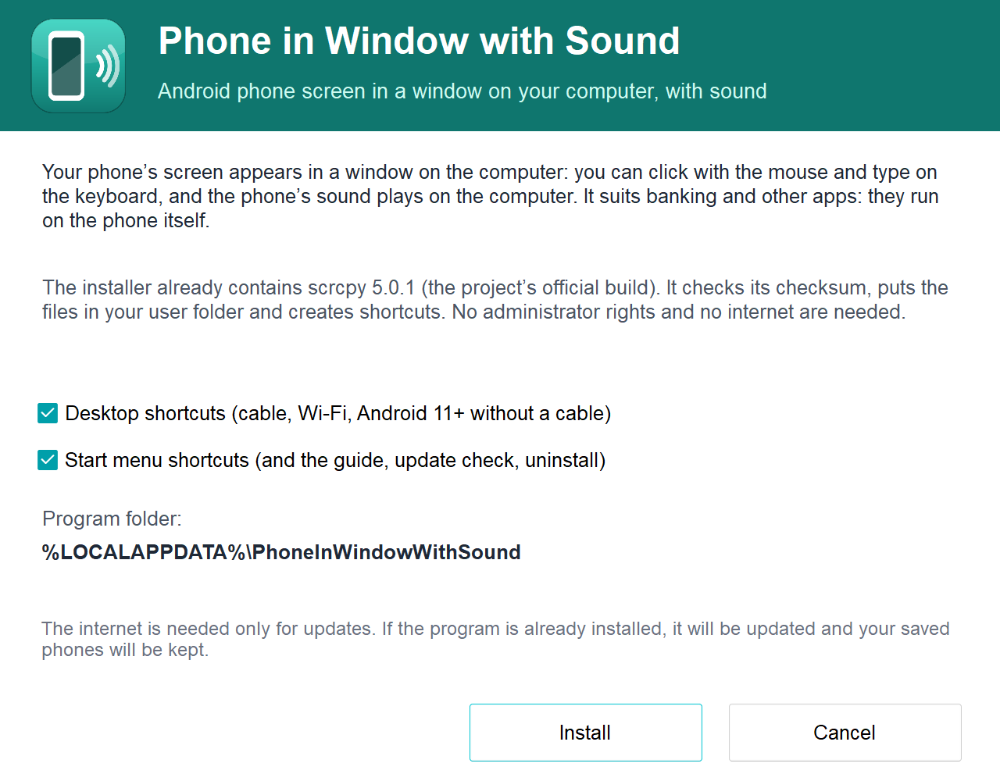
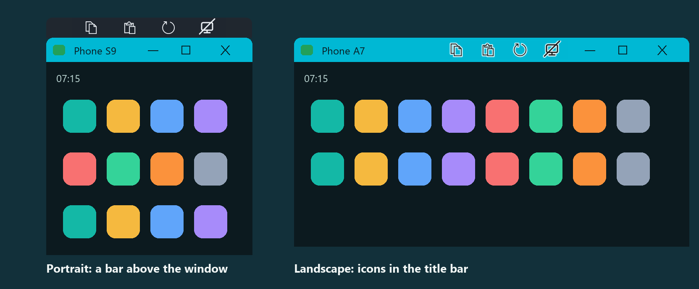
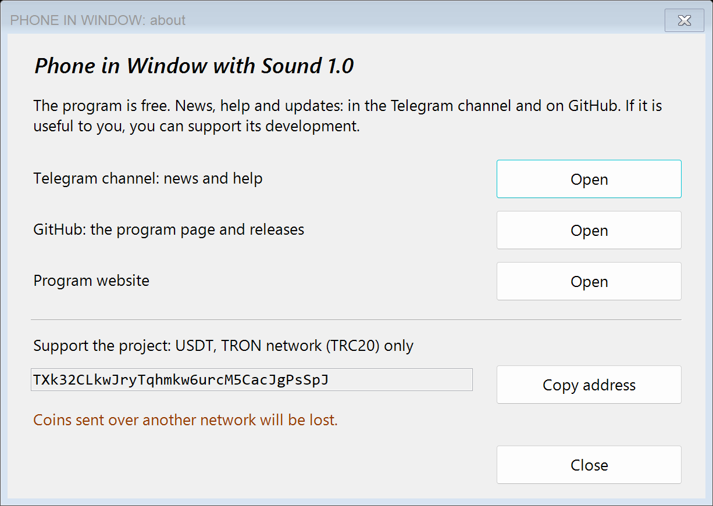
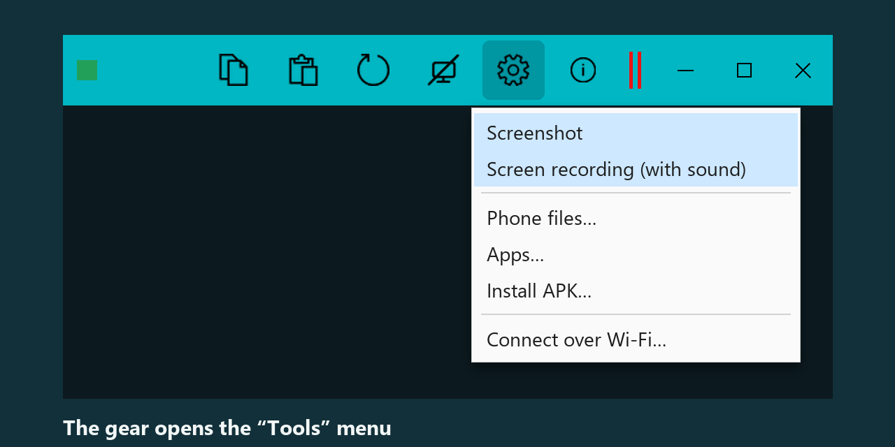

What it does
How it looks




Getting started
What you need
Limitations
The installer is not signed with a publisher certificate yet, so Windows may show a SmartScreen warning ("unknown publisher"): click "More info" and then "Run anyway" if you downloaded the file from here. The SHA-256 checksum is in the description of every release.
Support the project
The program is free. If it is useful to you, you can support its development with USDT.
USDT, network TRON (TRC20)
TXk32CLkwJryTqhmkw6urcM5CacJgPsSpJ
Send only USDT through the TRON (TRC20) network: coins sent through another network are lost. The transfer is public on the blockchain.
What it is made of
- scrcpy (Genymobile, Apache 2.0) shows the screen and passes your clicks and keystrokes to the phone.
- sndcpy (Romain Vimont, Apache 2.0) forwards the sound from Android 10.
- The wrapper (launcher, phone selection, window buttons, rotation, installer, phone report) is written separately and is not a Genymobile product.